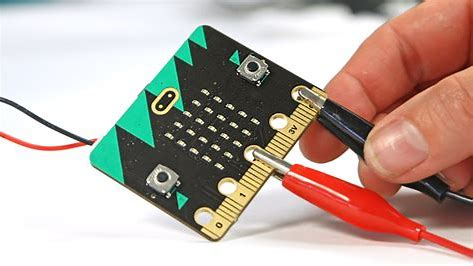

Inputs
De 2 inputs die ik heb gebruikt bij het programmeren van dit spel zijn knop A en knop B. Die 2 zorgen ervoor dat de playersprite van links en naar rechts bewegen.
outputs
De output is iets wat reageert op de input dus als ik op knop A druk dan is daarvan de reactie dat de player sprite naar links beweegt en als ik op Knop B druk dan beweegt de playersprite naar rechts. Ook een van de outputs is de appel die naar beneden valt op een willekeurige plek op de X-ass.
